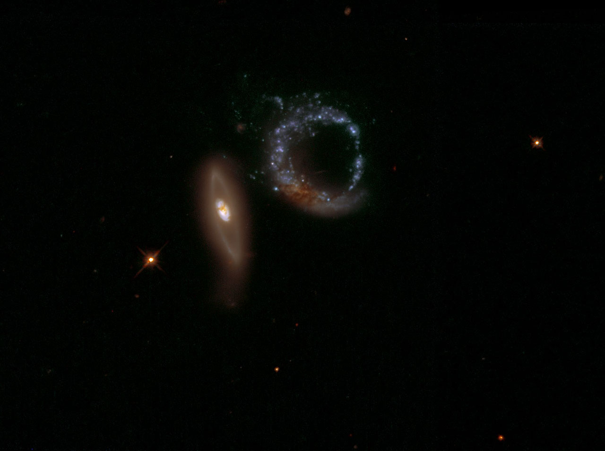

Arp peculiars galaxies catalog __ First steps with Multi-Order Coverage map’s#
Stefania Amodeo¹, Katarina A. Lutz¹, Manon Marchand¹, Sébastien Derrière¹
Université de Strasbourg, CNRS, Observatoire Astronomique de Strasbourg, UMR 7550, F-67000, Strasbourg, France
Introduction#
In this tutorial, we will explore Arp’s Catalog of peculiar galaxies. Using Multi-Order Coverage maps, we will find in seconds wich galaxies are present in the Sloan Digital Sky Survey (SDSS) and have been observed by the Galaxy Evolution Explorer (GALEX) satellite.

Figure: Arp147 taken by Joachim Dietrich. Credit: NASA & ESA
# Astronomy tools
import astropy.units as u
from astropy.coordinates import SkyCoord
# Access astronomical databases
import pyvo
from astroquery.mocserver import MOCServer
from astroquery.vizier import Vizier
# Sky visualization
from ipyaladin import Aladin
Find and download tables from VizieR#

We use the Vizier sub-module from the astroquery module.
We will explore the Arp’s Catalog of Peculiar Galaxies compiled by Halton C. Arp and published by Denis Webb.
Hence, we ask Vizier to find all catalogues that have a match with the keywords ‘Arp Galaxies’ and write the result into the variable catalog_list_arp (first line of code). Then we tell Python to print out the query result in a readable way (second line of code).
catalog_list_arp = Vizier.find_catalogs("Arp peculiar galaxies")
for name, item in catalog_list_arp.items():
print(name, ": ", item.description)
VII/74A : Atlas of Peculiar Galaxies (Arp 1966)
VII/192 : Arp's Peculiar Galaxies (Webb 1996)
The catalogue that we are interested in today is VII/192 and its description is “Arp’s Peculiar Galaxies (Webb 1996)”.
In oder to get the full catalogue with astroquery, we first set the row limit to infinite (i.e. -1 for astroquery), we specify that we want the default columns * and the additional columns _RAJ2000 and _DEJ2000 that are added by the VizieR team to each catalogue, and then we ask Vizier to write the content of the catalogue into the variable catalogs_arp:
catalogs_arp = Vizier(row_limit=-1, columns=['*', "_RAJ2000", "_DEJ2000"]).get_catalogs("VII/192")
catalogs_arp
TableList with 2 tables:
'0:VII/192/arpord' with 14 column(s) and 338 row(s)
'1:VII/192/arplist' with 15 column(s) and 592 row(s)
Now let’s inspect, what we got:
for catalog in catalogs_arp:
print(f"{catalog.meta['name']}: {catalog.meta['description']}")
VII/192/arpord: list of Arp views with imaging data
VII/192/arplist: list and info for involved galaxies
As we have seen, the catalogue “Arp’s Peculiar Galaxies (Webb 1996)” comes with two tables: arpord and arplist. As you can see from the printout Vizier has downloaded both of them. However, we are only interested in the arplist (index 1 in the TableList). Therefore, we write only the arplist table into a new variable table_arplist (first line) and then display the table (second line):
table_arplist = catalogs_arp[1]
table_arplist
| _RAJ2000 | _DEJ2000 | Arp | Name | VT | u_VT | dim1 | dim2 | u_dim2 | MType | Uchart | RAJ2000 | DEJ2000 | Simbad | NED |
|---|---|---|---|---|---|---|---|---|---|---|---|---|---|---|
| deg | deg | mag | arcmin | arcmin | ||||||||||
| float64 | float64 | int16 | str16 | float32 | str1 | float32 | float32 | str1 | str14 | int16 | str10 | str9 | str6 | str3 |
| 0.080417 | 22.990556 | 249 | UGC 12891 | 16.2 | -- | -- | -- | 00 00 19.3 | +22 59 26 | Simbad | NED | |||
| 0.090000 | 22.995000 | 249 | UGC 12891 | 16.2 | 1.3 | 0.5 | -- | 00 00 21.6 | +22 59 42 | Simbad | NED | |||
| 0.362083 | 31.433889 | 112 | NGC 7805 | 13.3 | 1.2 | 0.9 | SAB0^0: pec | 89 | 00 01 26.9 | +31 26 02 | Simbad | NED | ||
| 0.375833 | 31.442500 | 112 | NGC 7806 | 13.5 | 1.1 | 0.8 | SA(rs)bc? pec | 89 | 00 01 30.2 | +31 26 33 | Simbad | NED | ||
| 0.657083 | 16.652222 | 130 | IC 5378 | 15.6 | 0.5 | -- | SBc | -- | 00 02 37.7 | +16 39 08 | Simbad | NED | ||
| 0.657500 | 16.643611 | 130 | IC 5378 | 15.3 | -- | -- | E | -- | 00 02 37.8 | +16 38 37 | Simbad | NED | ||
| 1.570000 | -13.448056 | 51 | MGC-02-01-24 | 15.0 | 0.8 | -- | -- | 00 06 16.8 | -13 26 53 | Simbad | NED | |||
| 1.612917 | -13.416111 | 144 | NGC 7828 | 14.4 | 0.9 | 0.5 | Ring A | 260 | 00 06 27.1 | -13 24 58 | Simbad | NED | ||
| 1.620833 | -13.420833 | 144 | NGC 7829 | 14.6 | 0.7 | -- | Ring B pec | 260 | 00 06 29.0 | -13 25 15 | Simbad | NED | ||
| ... | ... | ... | ... | ... | ... | ... | ... | ... | ... | ... | ... | ... | ... | ... |
| 355.517083 | -3.589167 | 295 | ARP 295 | 14.6 | 0.9 | 0.5 | ? | Sb pec | -- | 23 42 04.1 | -03 35 21 | Simbad | NED | |
| 356.743750 | 29.458889 | 86 | NGC 7752 | 14.3 | 0.8 | 0.5 | ? | I0: | 89 | 23 46 58.5 | +29 27 32 | Simbad | NED | |
| 356.769583 | 29.483611 | 86 | NGC 7753 | 12.0 | 3.3 | 2.1 | SAB(rs)bc I | 89 | 23 47 04.7 | +29 29 01 | Simbad | NED | ||
| 357.187917 | 4.173333 | 68 | NGC 7757 | 12.7 | 2.5 | 1.8 | SAB(rs)c | 215 | 23 48 45.1 | +04 10 24 | Simbad | NED | ||
| 358.541667 | 0.382778 | 323 | NGC 7783 | 13.0 | 1.3 | 0.6 | S0^0: sp | 215 | 23 54 10.0 | +00 22 58 | Simbad | NED | ||
| 358.550000 | 0.377222 | 323 | NGC 7783B | 14.0 | 0.4 | 0.3 | S0 | 215 | 23 54 12.0 | +00 22 38 | Simbad | NED | ||
| 359.182500 | 16.807500 | 262 | MCG+03-01-003 | 14.6 | 0.5 | 0.4 | S | 125 | 23 56 43.8 | +16 48 27 | Simbad | NED | ||
| 359.187083 | 16.812500 | 262 | UGC 12856 | 13.2 | 2.4 | -- | IB(s)m | 125 | 23 56 44.9 | +16 48 45 | Simbad | NED | ||
| 359.491667 | -14.030000 | 50 | IC 1520 | 14.0 | 0.5 | 0.5 | -- | 23 57 58.0 | -14 01 48 | Simbad | NED |
Nice, we got the data we want. Before moving on, let’s have a look at how to use pyVO to get the same table with a Table Access Protocol (TAP) query.
First, we set the TAPService of pyvo to the server of Vizier that will receive our TAP query.
Then we write a simple query telling VizieR that we want all the rows and all (all is written * in SQL) the columns from the table VII/192/arplist. Note that we have to encompass the table name with quotation marks due to the special character / in the table name.
tap_vizier = pyvo.dal.TAPService("https://tapvizier.cds.unistra.fr/TAPVizieR/tap/")
query = """SELECT * FROM "VII/192/arplist" """
table_arplist_from_tap = tap_vizier.search(query).to_table()
table_arplist_from_tap
| recno | Arp | Name | VT | u_VT | dim1 | dim2 | u_dim2 | MType | Uchart | RAJ2000 | DEJ2000 |
|---|---|---|---|---|---|---|---|---|---|---|---|
| mag | arcmin | arcmin | |||||||||
| int32 | int16 | object | float64 | str1 | float64 | float64 | str1 | object | int16 | float64 | float64 |
| 112 | 333 | NGC 1024 | 12.1 | 3.9 | 1.4 | (R')SA(r)ab | 175 | 39.80083333333333 | 10.847222222222221 | ||
| 120 | 200 | NGC 1134 | 12.1 | 2.5 | 0.9 | S? | 175 | 43.42124999999999 | 13.015277777777776 | ||
| 119 | 190 | UGC 02320 | 15.2 | 0.5 | 0.3 | Multiple Sys | -- | 42.58291666666666 | 12.889444444444443 | ||
| 89 | 290 | IC 0195 | 14.3 | 1.6 | 0.8 | S0 | -- | 30.935833333333328 | 14.708611111111109 | ||
| 90 | 290 | IC 0196 | 14.2 | 2.8 | 1.4 | S0- | -- | 30.95833333333333 | 14.73972222222222 | ||
| 111 | 258 | UGC 02140A | 15.5 | 0.9 | 0.2 | SB.0*/ | -- | 39.78874999999999 | 18.367499999999996 | ||
| 110 | 258 | UGC 02140 | 15.4 | 1.7 | 0.7 | IBS9P | -- | 39.77583333333333 | 18.382777777777775 | ||
| 109 | 258 | Hickson 18C | 16.1 | -- | -- | S? | -- | 39.774583333333325 | 18.388333333333332 | ||
| 108 | 258 | Hickson 18D | 14.6 | -- | -- | S? | -- | 39.76916666666666 | 18.393888888888885 | ||
| ... | ... | ... | ... | ... | ... | ... | ... | ... | ... | ... | ... |
| 464 | 261 | ARP 261 | -- | -- | -- | -- | 222.38624999999996 | -10.163055555555554 | |||
| 463 | 261 | ARP 261 | -- | -- | -- | -- | 222.38624999999996 | -10.156666666666665 | |||
| 549 | 14 | NGC 7314 | 10.9 | 4.6 | 2.1 | SAB(rs)c: II | 347 | 338.94041666666664 | -26.05083333333333 | ||
| 547 | 93 | NGC 7284 | 11.9 | 2.1 | 1.5 | SB(s)0^0 pec | 347 | 337.15 | -24.844166666666663 | ||
| 548 | 93 | NGC 7285 | 11.9 | 2.4 | 1.4 | SB(rs)a pec | 347 | 337.1583333333333 | -24.84083333333333 | ||
| 546 | 226 | NGC 7252 | 11.4 | 2.0 | 1.6 | SAB0^0? pec | 347 | 335.1866666666666 | -24.678611111111106 | ||
| 541 | 325 | ESO 601- G 018 | 16.1 | -- | -- | -- | 331.6008333333333 | -21.079166666666662 | |||
| 540 | 325 | ESO 601- G 018 | 17.9 | -- | -- | -- | 331.59666666666664 | -21.077499999999997 | |||
| 539 | 325 | ESO 601- G 018 | 18.1 | 1.7 | 0.7 | -- | 331.5925 | -21.072499999999998 |
There we go, we now know two nifty ways to get VizieR tables with Python. Obviously there are many other things you can do with this tools. For example if you set your TAP endpoint to https://simbad.cds.unistra.fr/simbad/sim-tap instead of the VizieR endpoint, you can query SIMBAD just like that.
If you want to learn more about the TAP interface, you can have a look at VizieR’s documentation.

Note that not all rows but only the first and last 10 rows for all columns are shown in the display. To finish off this little excursion, we now want to visualise the location of the entries of this table in an Aladin Lite widget. To do so, we tell Python to take the variable aladin and add the table table_arplist to it:
aladin = Aladin(height=600)
aladin
aladin.add_table(table_arplist)
Now explore the Aladin Lite widget. You will find that the location of the sources in the arplist table are marked with coloured symbols. You can zoom in and out to look at the different sources and check their peculiarity. If you click on one of the colour symbols, you will be able to see the corresponding row in the bottom of the Aladin Lite widget.
Note if you are using Jupyter Lab instead of single Jupyter notebooks, you can open two notebooks that share a kernel. Then one notebook could contain your working environment, where you get and work on your tables ect. The other notebook could contain the Aladin Lite widget, and just remain visible all the time. This way there would be no need to scroll up and down.
MOCs in Python#
We can use MOCs to find out whether any of these galaxies have been observed both by SDSS and GALEX. For this task we use the mocserver module of astroquery and the functionalities of MOCpy to get the intersection of the MOCs. First let’s query the MOC server for all things SDSS and all things GALEX.
info_sdss = MOCServer.query_region(
criteria="ID=*SDSS*",
) # if we don't give a region to query_region, it looks in the whole sky
info_sdss[["ID"]]
| ID |
|---|
| str25 |
| CDS/J/ApJ/749/10/SDSS-obs |
| CDS/P/HLA/SDSSg |
| CDS/P/HLA/SDSSr |
| CDS/P/HLA/SDSSz |
| CDS/P/HST/SDSSg |
| CDS/P/HST/SDSSr |
| CDS/P/HST/SDSSz |
| CDS/P/SDSS9/color |
| CDS/P/SDSS9/color-alt |
| CDS/P/SDSS9/g |
| CDS/P/SDSS9/i |
| CDS/P/SDSS9/r |
| CDS/P/SDSS9/u |
| CDS/P/SDSS9/z |
info_galex = MOCServer.query_region(criteria="ID=*GALEX*")
info_galex[["ID"]]
| ID |
|---|
| str24 |
| CDS/P/GALEXGR6/AIS/FUV |
| CDS/P/GALEXGR6/AIS/NUV |
| CDS/P/GALEXGR6/AIS/color |
| CDS/P/GALEXGR6_7/FUV |
| CDS/P/GALEXGR6_7/NUV |
| CDS/P/GALEXGR6_7/color |
Now that we know what the relevant data sets are called, we can move on to download the corresponding MOCs,
moc_sdss = MOCServer.query_region(criteria="ID=CDS/P/SDSS9/color", return_moc=True)
moc_galex = MOCServer.query_region(
criteria="ID=CDS/P/GALEXGR6/AIS/color",
return_moc=True,
)
and calculate the intersection of these two MOCs.
moc_intersection = moc_sdss.degrade_to_order(9) & moc_galex
# we degrade the SDSS MOC to have the same order than the Galex MOC. This step is not
# mandatory and only allows to get a less precise - and thus easier to print - MOC
print(
f"The intersection of SDSS and GALEX covers"
f" {round(moc_intersection.sky_fraction *100., 1)}% of the sky",
)
The intersection of SDSS and GALEX covers 32.5% of the sky
Now we can use this MOC to filter our table of Peculiar Galaxies.
coords = SkyCoord(
ra=table_arplist["_RAJ2000"],
dec=table_arplist["_DEJ2000"],
unit=(u.deg, u.deg),
)
mask = moc_intersection.contains_skycoords(coords)
print(
f"Among the {len(table_arplist)} peculiar galaxies, {len(table_arplist[mask])} are observed by both GALEX and SDSS!",
)
Among the 592 peculiar galaxies, 429 are observed by both GALEX and SDSS!
mask is a boolean table that is True where a peculiar galaxy is contained in the intersection of SDSS and GALEX MOCs. Doing table_arplist[mask] results in a smaller table corresponding to the lines that are True in mask.
To visualise only the galaxies within the MOC, we can add the filtered table to the AladinLite widget. This table will show up in a different colour than the first one we visualised.
aladin.add_table(
table_arplist[mask],
color="lightblue",
name="observed_by_GALEX_and_SDSS",
shape="circle",
source_size=13,
)
The last thing to do with our MOC is to visualise it. We can either plot it using matplotlib (see MOCPy’s documentation) or add it to our ipyaladin widget:
aladin.add_moc(moc_intersection, color="pink", opacity=0.45)
Before leaving the tutorial, don’t forget to scroll back up and look at the results in the Aladin widget where you can check that the peculiar galaxies are indeed in the MOC ;)